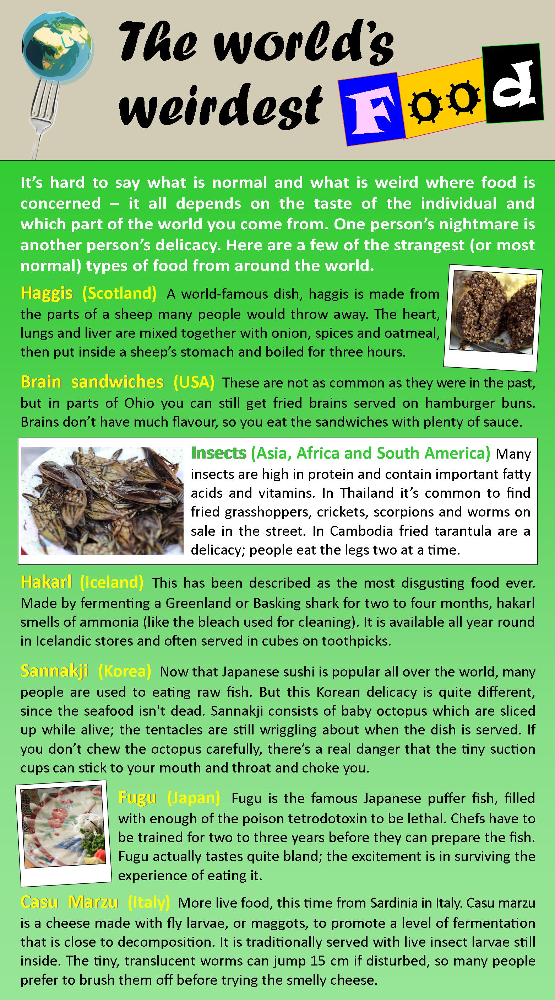

Instructions
Do the preparation exercise first. Then read the text and do the other exercises.
Reading

Discussion
What's the weirdest food you've ever tried? What was it like?
Do you know any other weird foods?
Language level
Personal online tutoring
EnglishScore Tutors is the British Council’s one-to-one tutoring platform for 13- to 17-year-olds.

Comments